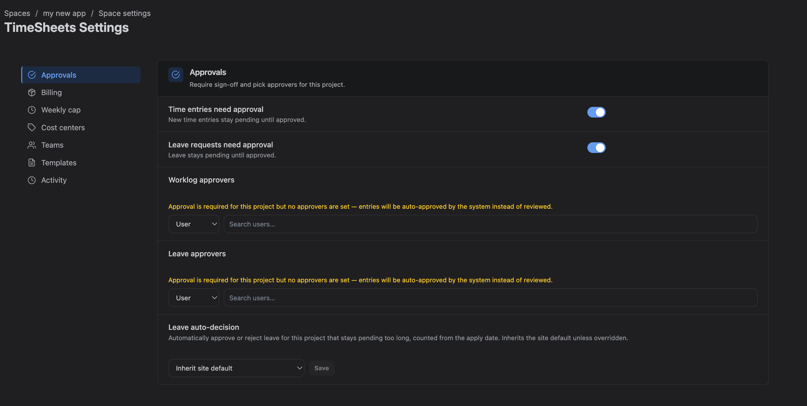
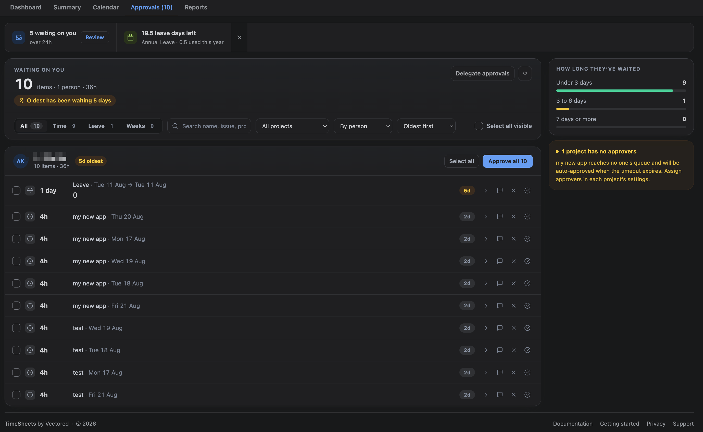
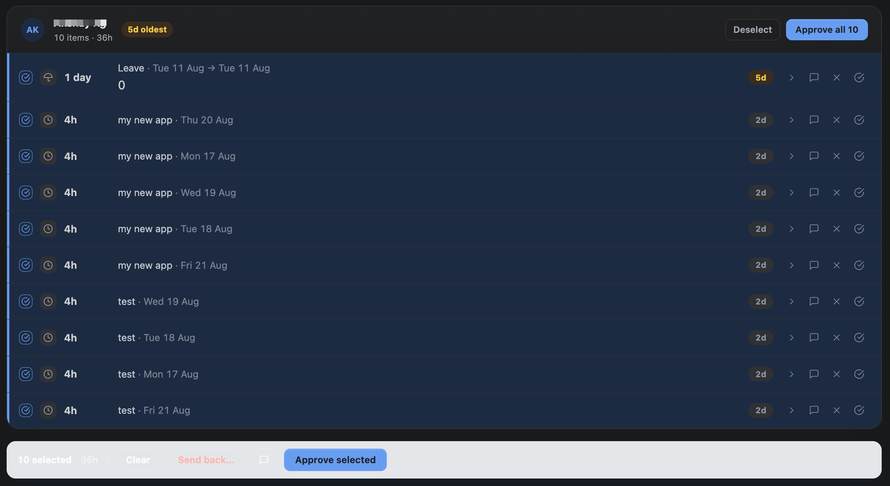

Time can require approval before it counts as final. Whether it does, and by whom, is decided per project.
1. How routing works
An entry needs approval if the project it was logged to is configured to require it. The people who can decide are, in order:
- Worklog approvers named on that project's settings — individuals or groups;
- Project administrators for that project;
- Jira site administrators, who can decide anything.
Nobody can approve their own time, including site administrators. That rule has no exceptions and no override.
If a project requires approval but has no approvers named, its entries would otherwise sit forever. Those projects surface to site administrators so the gap is visible rather than silent.
2. Configuring approvers
Set them under Project Settings → Approvals. Worklog and leave approvers are configured separately, because they are often different people — a delivery lead signs off hours, a line manager signs off absence.

Approvers can be individuals or Jira groups. Adding a group means anyone in it can decide.
3. The approvals queue
The Approvals tab in the Hub is everything waiting on you. It appears only if you approve for at least one project.
The top of the page counts what is outstanding: how many items, across how many people, and how many hours. If anything has been waiting three days or more, it says how long the oldest has sat there — a queue that is merely long is different from one that is being neglected.

4. Grouped by person
Items are grouped under the person who submitted them, oldest group first — whoever has waited longest is at the top, however much or little they sent.
Each group header carries that person's item count, their total hours, and the age of their oldest item. Approve all decides the whole group in one action.
That is the point of the grouping: approving a colleague's week is usually one judgement, and it should not have to be expressed as six identical clicks.
You can group by type instead — time, leave, weeks — or turn grouping off for a single flat list. Sorting is oldest-first by default, and can be reversed.
5. Reading a row
Every item is one row: how much, what it is for, and how long it has been waiting.
| Column | What it shows |
|---|---|
| Icon | Whether this is a time entry, a leave request, or a submitted week |
| Amount | Hours for time and weeks; days for leave |
| Detail | Project, issue and date — or the leave type and its dates, or the week and its size |
| Age pill | Days waiting, amber once it reaches three |
| Actions | History, approve with a note, send back, approve |
Three days is a display threshold, not policy. It is roughly when a wait becomes worth noticing. It is deliberately not tied to the auto-approve timeout, which is a separate decision and may be switched off entirely.
A submitted week expands in place to show the entries inside it. History on any row opens its full decision trail.
Use Refresh after someone tells you they have submitted something — the queue does not poll continuously.
Your own work is never in your own queue. Nobody approves their own time or leave, so listing it would only offer a button that fails. Your own pending work is on the Summary tab — My leave, My week, and the week-submissions gadget.
6. Filters and multi-select
Filter by type, project or person, or search by name, project, issue or description. Filters are there because approving fifty entries one at a time is how approval becomes rubber-stamping.
Leave reasons are not searchable, and that is deliberate. A reason can describe a medical condition. Making it a search term would mean typing a condition into a filter box and getting back a list of the people who have it. The reason is not sent with the queue at all — it is fetched only when you press Show reason on that one request.
Tick rows and use the bulk bar to approve or send back several at once, up to 100 items in one action. The bar appears at the bottom of the screen as soon as anything is selected, and says how many items and how many hours it is about to commit.
Selection is scoped to what is on screen: applying a filter that hides a selected row also unselects it, so nothing gets decided that you could not see. Refreshing clears the selection for the same reason.
A rejection comment is validated once for the whole batch rather than per item, so a bulk send-back with no comment is refused outright instead of half-applying.
If some items in a batch cannot be decided — usually because another approver got there first — the queue reports exactly which ones failed and why, rather than reporting success for the whole batch.

7. Rejecting, and approving with a note
Sending something back requires a comment. The person is told what to fix, they are emailed it, and it is kept in the audit trail.
An approval can carry a note too — the message icon beside the decision buttons, on a row or on the bulk bar. That is optional: *approved, but split this by project next time* is worth saying, and requiring a comment on every approval would only produce a hundred of them reading "ok".
Plain Approve stays a single click. The note is an extra affordance, not a step.
A rejected entry stays visible to its owner so they can correct and resubmit it. Rejecting also removes any price that had been captured for it — rejected work is not revenue.
8. The side panel
Beside the queue sits the context that is not about any one row.
| Panel | What it tells you |
|---|---|
| How long they've waited | The backlog split into under 3 days, 3 to 6, and 7 or more — whether you have a long queue or an old one |
| Projects with no approvers | Shown to site administrators only. This work reaches nobody's queue and will be auto-approved when the timeout expires |
| Covering for | Whose approvals you are standing in for, and until when. See Delegation |
Decisions you make while covering for somebody are recorded under your name in the approval history, with the delegation noted.

9. Automatic approval
Entries left pending beyond the auto-approve timeout are approved automatically by a scheduled job. The default is 72 hours; set it in Admin Settings, or set it to zero to switch it off.
Automatically approved entries are marked as such and recorded as decided by the system, so a reviewer can always tell a considered approval from a lapsed one.
Auto-approval is a convenience, not a control. If your organisation needs every entry positively approved, set the timeout to zero and staff the queue.
10. What approval changes
- The entry counts as final in reports.
- If worklog sync is on and the entry has an issue, a Jira worklog is written.
- If billing is configured, the entry is priced and that price is recorded — see Billing Health.